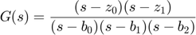
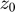
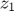
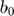
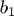
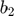
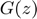
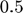

Skrypt do sprawdzania projektu 1 z STP
Contents
Treść zadania
Obiekt dynamiczny opisany jest transmitancją ciągłą

Treści zadań projektowych różnią się zerami (, ), biegunami (, , ) i warunkiem początkowym symulacji, np.:
zerac = [-1, -10]; % [z_0, z_1] biegunyc = [11, -12, -13]; % [b_0, b_1, b_2] x0 = [-1 -2 5]'; %
Zadanie 1
Wyznaczyć transmitancję dyskretną  . Zastosować okres próbkowania  sek. i ekstrapolator zerowego rzędu. Określić zera i bieguny transmitancji ciągłej i dyskretnej.
% Test